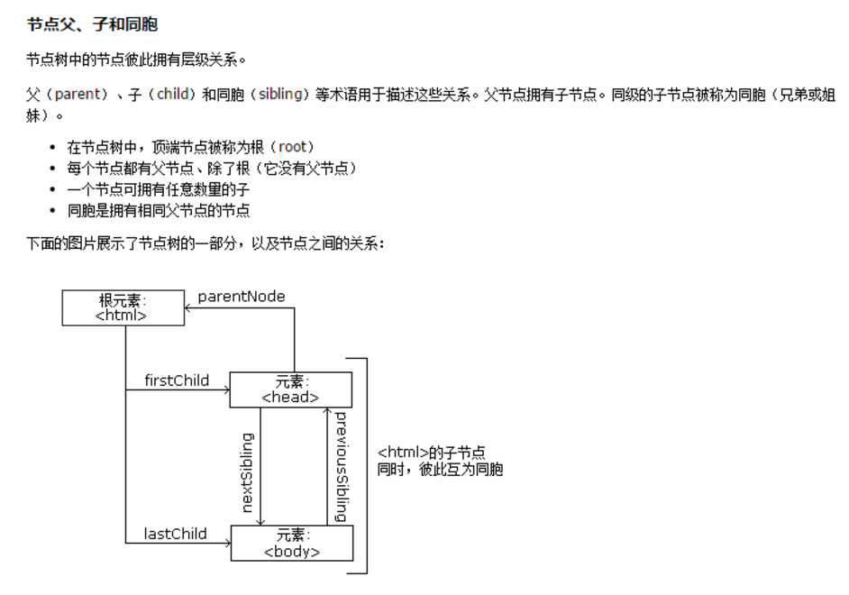

分享人：王恒
目录
1.背景介绍
2.知识剖析
3.常见问题
4.解决方案
5.编码实战
6.扩展思考
7.参考文献
8.更多讨论
DOM是针对于HTML和XML文档的一个API（应用程序编程接口）。是W3C组织推荐的处理可扩展标志语言的标准编程接口。在网页上，组织页面（或文档）的对象被组织在一个树形结构中，用来表示文档中对象的标准模型就称为DOM。 当网页被加载时，浏览器会创建页面的文档对象模型（Document Object Model）。 在DOM中，可以将任何HTML或者XML的文档描绘成一个由多层节点构成的结构

通过使用 getElementById() 方法匹配元素的id属性来访问元素节点，对元素节点进行操作
通过使用 getElementsByTagName() 方法匹配元素的tagName来访问元素节点，对元素节点进行操作
通过使用 getElementsByClassName() 方法匹配元素的className来访问元素节点，对元素节点进行操作
值得注意的是， getElementsByTagName() 和 getElementsByClassName() 这两种方法因为其访问的是节点中的可能为复数的属性， 所以得到的会是一个以数组的形式来体现出来的元素节点集合，我们可以通过打印获取到的DOM节点来判断类型
document.createElement('元素名');创建新的元素节点
document.createAttribute('属性名');创建新的属性节点
document.createTextNode('文本内容');创建新的文本节点
document.createComment('注释节点');创建新的注释节点
document.createDocumentFragment( );创建文档片段节点
ID不能重名，如果ID重复，只能取到第一个。
获取元素节点时，必须等到DOM树加载完成后才能获取。
通过class和标签获取到的节点为数组格式，操作时必须取到其中的每一个元素（数组下标），才能进行操作，而不能直接对数组进行操作。
innerHTML 空DOM节点插入新的DOM节点,非空DOM节点会直接替换掉原来的所有子节点
appendChild() Node.appendChild() 把一个子节点添加到父节点的最后一个子节点;如果节点已经存在于当前文档树，这个节点会从原先的位置删除，再插入到新的位置。
parentNode.removeChild( existingChild );删除已有的子节点，返回值为删除节点
element.removeAttribute('属性名');删除具有指定属性名称的属性，无返回值
element.removeAttributeNode( attrNode );删除指定属性，返回值为删除的属性
允许 JavaScript 对 HTML 事件作出反应
onclick 事件——当用户点击时
onload 事件——用户进入
onunload 事件——用户离开
onmouseover事件——鼠标移入
onmouseout事件——鼠标移出
onmousedown事件——鼠标按下
onmouseup 事件——鼠标抬起
addEventListener() 方法用于向指定元素添加事件句柄。
addEventListener() 方法添加的事件句柄不会覆盖已存在的事件句柄。
可以向一个元素添加多个事件句柄。
可以向同个元素添加多个同类型的事件句柄，如：两个 "click" 事件。
可以向任何 DOM 对象添加事件监听，不仅仅是 HTML 元素。如： window 对象。
addEventListener() 方法可以更简单的控制事件（冒泡与捕获）。
element.addEventListener(event, function, useCapture);
第一个参数是事件的类型 (如 "click" 或 "mousedown")
第二个参数是事件触发后调用的函数。
第三个参数是个布尔值用于描述事件是冒泡还是捕获，true则表示在捕获阶段调用，为false表示在冒泡阶段调用。
如何阻止事件冒泡
使用event.stopPropagation( );
另一种方式是通过event.target， target指向了触发事件的那个具体对象. 可以使用 if(event.target==this){ //语句 }
1.JavaScript高级程序设计
2.head first JavaScript
感谢大家观看
BY : 王恒